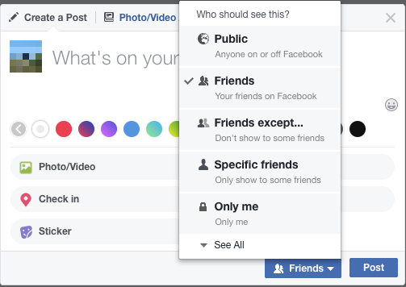

Privacy: who you show information to
Do you want to limit which people can see what you think and do?
If so, who do you feel comfortable seeing your posts?
Perhaps you think of 'friends' online as different to friends offline. Maybe you share more with them, maybe less.
Perhaps you show different things to different people depending on the content. You have control over what you put out there.
For example, on Facebook you can allow or limit who sees your posts to only you, your friends, friends of friends, or anyone.

Other apps and sites have similar settings.
Check your social media settings on six major platforms with this clear guide from the Center for Identity at the University of Texas.
Other aspects of privacy:
What you show
To who
How
Where
When